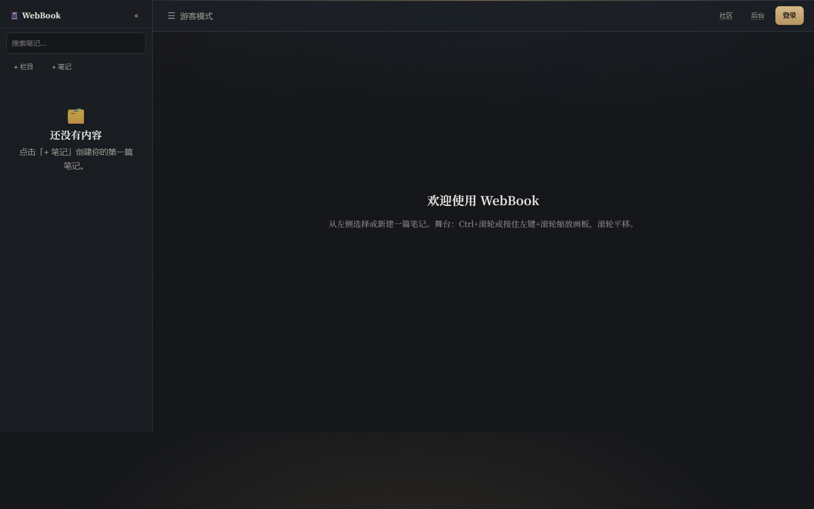
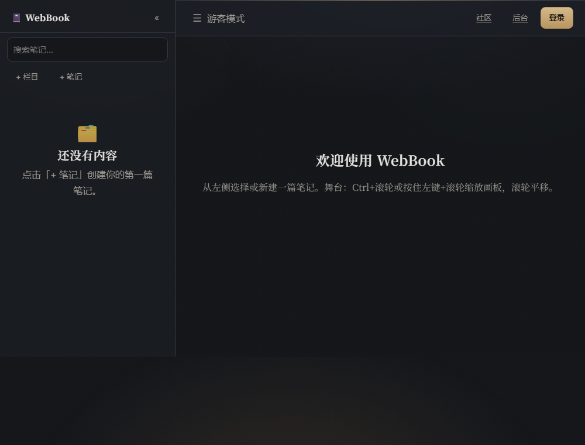
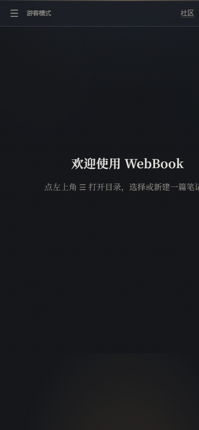
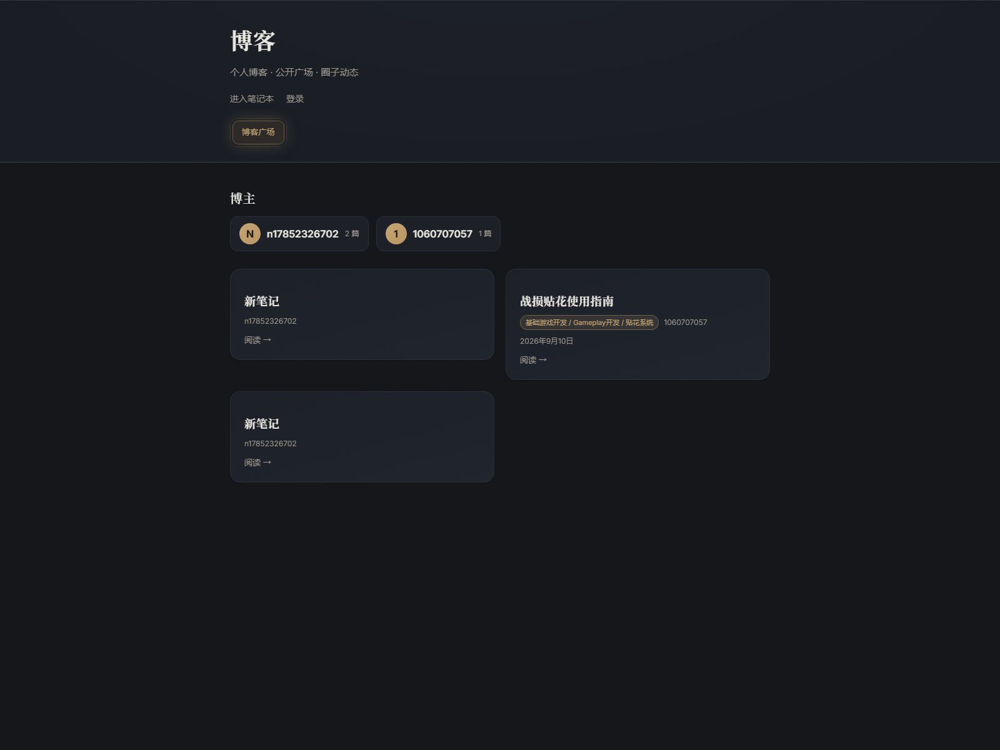
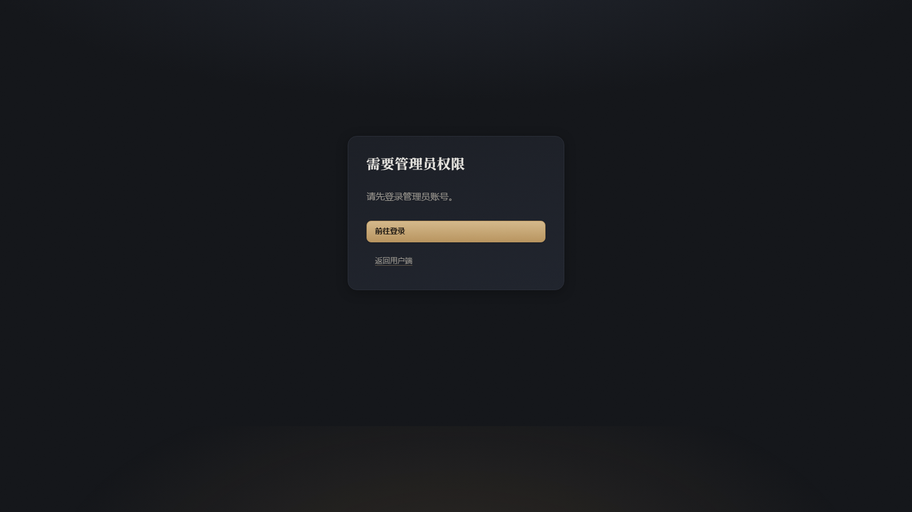
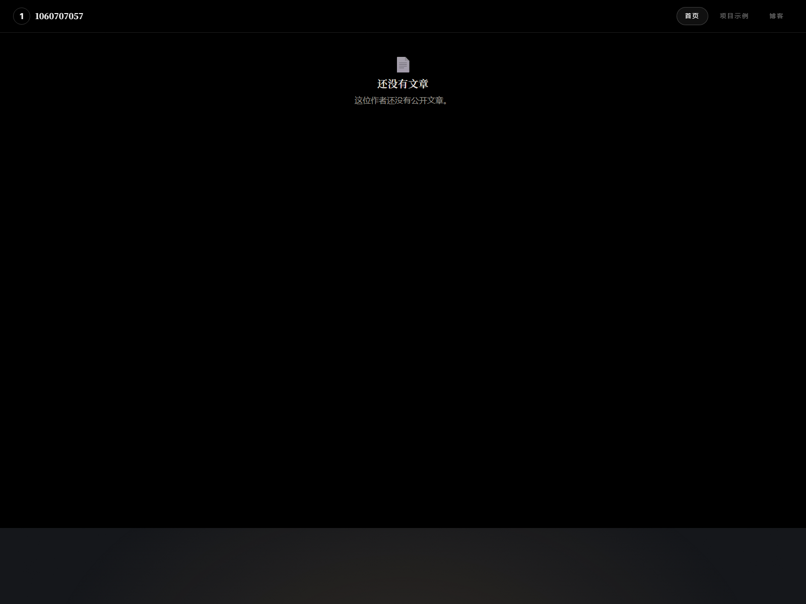

功能已经够多了，问题出在视觉体系：token 只覆盖了外壳，画布层偷偷用了另一套冷色， 侧栏在 6 级目录下会被挤爆，顶栏 7 个入口没有主次。 下面三份设计稿覆盖同样 9 个界面，只有"语言"不同 —— 请挑一个方向，或告诉我混搭哪几块。
同一套信息架构，三种视觉语言。点开任一方向看完整设计稿。
保留暖金与暗色，去掉大范围玻璃模糊和极光动效；把画布从冷蓝改回暖石墨 + 金色连线。写作时背景终于安静下来。
纸白底 + 墨黑字 + 朱砂点色，层级靠细分割线和留白而不是卡片阴影。适合白天长时间写文档，暗色留作夜间模式。
冷石墨底 + 青色强调（青色这次是全局主色，不再只是画布私用）。元数据用等宽字体，高信息密度但强对齐。
headless Chrome 实拍，取自你本机 localhost:5173 与线上站。全部原图在 _before/。






--fs-* 用了 0 次，字号硬编码 188 处11 种 px 字号里，12px 出现 58 次、13px 46 次、11px 30 次 —— 三个角色没有名字。改一次要动几十处。
var(--token, #hex) 兜底会把画布变蓝画布/图谱层用 #38bdf8 冷蓝 + #334155 slate 写在兜底值里，且 --muted 是拼错的 token 名（真名 --text-muted），所以 #94a3b8 永远生效。
从你运行中的 /app 读到真实目录最深 7 级（缩进 8 + depth×14 = 106px），只剩 190px 放文字和 5 个工具按钮。
📁📄 ＋❏☑✎🗑 ☰ ⠿ ✕ 🤖 🛠 ⟳… blockFactory.ts 甚至把中文词「立方」当图标。跨平台字形不同、不能跟随主题色。
/app 有外壳AppShell 只被 UserApp.tsx 使用 —— /blog、/blog/u/*、/app/circles、/admin 都没有侧栏、顶栏和 ⌘K。
v4 / v5 霓虹 / io-* / blog-home-v2 / io-site / Swiss 全在同一个文件里。改"卡片样式"改第一处定义不会生效（.io-card、.btn-sm 都定义了两遍）。
--fs-* 补 11/12/13px 三档，--space-* 补 6/10/14/18px，加 --radius-pill、--stage-bg、--on-media、--handle，把写了 7 遍的 0 4px 14px rgba(0,0,0,.35) 收成 --shadow-md。var(--token, #hex) 兜底，并把 --muted 改名 --text-muted。这是"画布不会某天突然变蓝"的保险。aria-hidden + 父级 aria-label。/blog、/app/circles、/admin 共用顶栏 + ⌘K；顶栏加 active 态；「后台」只对 admin 显示。